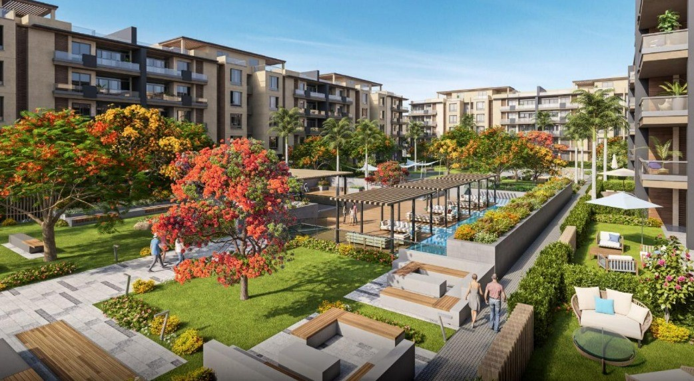

تعمير للتطوير العقاري


تعمير للتطوير العقاري هي إحدى أبرز الشركات في القطاع العقاري، والتي تهدف إلى تحسين معيشة الناس من خلال مشاريعها المبتكرة وعالية الجودة. وتعمل الشركة على تحقيق رؤيتها الإستراتيجية لتطوير مجتمعات متكاملة تلبي احتياجات السكان بأعلى مستوى من الراحة والمرافق.
تتمتع تعمير للتطوير العقاري بسجل حافل من المشاريع الناجحة، والتي تشمل مجموعة واسعة من المباني السكنية والتجارية والمكاتب والفنادق. وآخر هذه المشاريع هو "كمبوند ديار 2 بمدينة السادس من أكتوبر"، وهو مشروع ضخم يهدف إلى إنشاء مجتمع عمراني حديث يضم مجموعة متنوعة من المرافق والخدمات العامة.
تركز تعمير للتطوير العقاري على تنفيذ مشاريعها بطريقة فعالة ومهنية عالية، مع الالتزام بأعلى معايير الجودة والسلامة. وهي تضم فريقًا من المهنيين المؤهلين وذوي الخبرة الذين يعملون جنبًا إلى جنب مع المهندسين والمعماريين لتحقيق نتائج استثنائية.
تلتزم تعمير للتطوير العقاري بالابتكار واستخدام أحدث التقنيات في تنفيذ مشاريعها. وبفضل الاستخدام الإبداعي للتكنولوجيا، تتميز مشاريع الشركة بالتصميمات المستدامة والاستخدام الفعال للمساحات والمعدات الذكية. ومن خلال استخدامها المبتكر للتكنولوجيا، تسعى الشركة إلى تحسين نوعية الحياة لسكان مجتمعاتها.

تعلن شركة تعمير للتطوير العقاري عن إطلاق كمبوند ديار 2 6 أكتوبر، أحد أبرز المشاريع العقارية بمنطقة التوسعات الشمالية بالقرب من العرب مول. يقع هذا المجمع في قلب مدينة السادس من أكتوبر، وهو المكان المثالي للعيش في هذه المدينة الراقية.
يتميز كمبوند ديار 2 بالتصميمات الحديثة والمساحات الواسعة، ويوفر لسكانه نمط حياة استثنائي يجمع بين الأناقة والراحة والتوفير. لقد تم تصميمه بعناية لتلبية احتياجات مختلف السكان وتوفير بيئة ممتعة للعيش والاسترخاء.
يضم كمبوند ديار 2 العديد من المرافق والخدمات التي تلبي احتياجات المقيمين بداية من الموقع الحيوي بمدينة 6 أكتوبر والشقق المفروشة الفاخرة بأحدث التشطيبات والديكورات. كما يضم الكمبوند مساحات خضراء واسعة ومناطق ترفيهية لضمان تجربة سكنية مريحة وممتعة.
يتميز موقع كمبوند ديار 2 بقربه من كمبوند ماونتن فيو وسهولة الوصول إلى جميع الخدمات الأساسية، مما يجعله الاختيار المناسب للعيش والاستثمار في منطقة السادس من أكتوبر.
أما عن الأسعار فتختلف حسب نوع الوحدة والمساحة، كما يتوفر نظام سداد مرن يمتد على 6 سنوات. بالإضافة إلى ذلك فإن تعمير للتطوير العقاري تقدم عروض خاصة وأسعار حصرية للمشروع.
يعد كمبوند ديار 2 بمدينة السادس من أكتوبر فرصة مثالية للعيش في مساحة سكنية عصرية وفاخرة وسط بيئة مليئة بالراحة والأناقة. ولذلك ننصح جميع المهتمين بالاستثمار العقاري بزيارة الموقع الرسمي والتعرف على مميزات كمبوند ديار 2 بالسادس من أكتوبر والتعرف على العروض والأسعار المتوفرة.

تم إنشاء كمبوند كابيتال دريم في العاصمة الإدارية الجديدة على مساحة تصل إلى 37 فدانًا. وقد تم تخصيص جزء كبير من هذه المساحة للمساحات الخضراء والخدمات الترفيهية وحمامات السباحة، بينما تم تخصيص الجزء الأصغر للمباني والمنشآت. يضم الكمبوند وحدات سكنية متنوعة تناسب جميع العائلات، بدءًا من الفيلات المستقلة وحتى الشقق السكنية، وتتراوح مساحات الوحدات السكنية من 120 مترًا مربعًا إلى 450 مترًا مربعًا.
يقع كمبوند كابيتال دريم بالمنطقة R8 القطعة H2 بالحي الثامن بالعاصمة الإدارية الجديدة. ويتميز الكمبوند بإطلالته الخلابة على المناطق الأخرى مثل كمبوند أناكاجي والمنطقة الدبلوماسية. يتميز الموقع الاستراتيجي للكمبوند بقربه من المناطق الحيوية والمحاور الرئيسية مما يسهل وصول السكان إليه.
تم تنفيذ تصميمات فريدة تجاوزت المستوى العالمي في كمبوند كابيتال دريم، وذلك بفضل أمهر المهندسين الاستشاريين والمعماريين ذوي الكفاءة العالية. تم تأثيث الوحدات بشكل استثنائي لتوفير الراحة والاستفادة الكاملة من جميع الخدمات. تشغل المباني جزءًا كبيرًا من المساحة الإجمالية للمشروع، بينما تبقى المساحات الخضراء الشاسعة لممارسة الأنشطة الخارجية.
كمبوند كابيتال دريم هو مشروع سكني فاخر من شركة تعمير العقارية، يقع في قلب العاصمة الإدارية الجديدة بالقرب من كمبوند أناكاجي. يتوفر بالكمبوند شقق ودوبلكس وفيلات مستقلة متنوعة.
لقد تم تصميم مشروع كمبوند كابيتال دريم بفكرة جديدة وفريدة تختلف عن المجمعات السكنية التقليدية، بهدف تحقيق أقصى مستويات الربح. ويمكن الحصول على أحدث المخططات الرئيسية والكتيب والأسعار الخاصة بالمشروع من خلال موقع عقارات مصر.

يقع كمبوند أزاد بالقاهرة الجديدة في قلب القاهرة الجديدة وبالتحديد في التجمع الخامس. تم إنشاء المشروع وتطويره من قبل شركة تعمير العقارية، ويتميز بموقعه المركزي في واحدة من أكثر المناطق المرغوبة في القاهرة الجديدة.
تم تصميم الوحدات السكنية في كمبوند أزاد التجمع الخامس على الطراز الحديث لتحسين استغلال المساحة وتجنب الهدر. وبغض النظر عن حجم الوحدة أو تصميمها، فقد تم تخطيط كل مساحة بعناية لتوفير أعلى مستوى من الراحة وأسلوب الحياة العصري.
يتميز المشروع بوجود مسجد لأداء الصلوات والشعائر الإسلامية داخل المجمع، مما يوفر للمقيمين إمكانية الوصول السهل والمريح إلى المرافق الدينية.
لا يقتصر التركيز في كمبوند أزاد التجمع الخامس على السكن فحسب، بل يوجد أيضًا منطقة خدمات أنيقة تبلغ مساحتها 19 فدانًا. وتحتوي هذه المنطقة على مسارات خاصة لعشاق الركض وركوب الدراجات، بالإضافة إلى مناطق مخصصة لحفلات الشواء والاحتفالات.
تتميز الحياة في كمبوند أزاد التجمع الخامس بمزايا متعددة، بدءًا من الموقع المتميز القريب من المستشفيات والمدارس ومراكز التسوق الكبرى، إلى وجود أمن وحراسة على مدار 24 ساعة لضمان سلامة السكان. كما يتم توفير خدمات تنظيف عالية الجودة للحفاظ على نظافة الكمبوند.
ولا تنتهي المزايا هنا، حيث يوجد حديقة عامة تحتوي على منطقة ترفيهية للأطفال، بالإضافة إلى جراجات لوقوف السيارات أسفل المباني، كما تتوفر خدمات الأمن والحراسة على مدار 24 ساعة داخل المشروع.

يقدم كمبوند تالا بمدينة السادس من أكتوبر وحدات سكنية متنوعة تتنوع بين الشقق والدوبلكس والبنتهاوس. كما يتميز بالتصميم الحديث والمساحات المتنوعة. يوفر المشروع فرصة للعديد من الشرائح التي تبحث عن الاستقرار والعيش المريح والهادئ وبأسعار تنافسية.
تتوفر أنظمة سداد مرنة داخل كمبوند تالا 6 أكتوبر، حيث تتنوع طرق السداد لتناسب شرائح الشراء المختلفة. حرصت تعمير للتطوير العقاري على توفير أنظمة سداد مرنة تمنح العملاء حرية أكبر في سداد ثمن الوحدة، دون الحاجة إلى دفع مبلغ مقطوع شهريًا.
ومن أبرز أنظمة الدفع المتاحة دفع 5% بعد ثلاثة أشهر، و10% بعد سنة، ويتم سداد الباقي على فترة تصل إلى 8 سنوات. التسليم فوري عند الشراء والوحدات كاملة التشطيب وفاخرة.
يتميز كمبوند تالا 6 أكتوبر بقربه من ميدان جهينة وإطلالته على نادي الصيد مما يجعله موقع متميز قريب من شارع 26 يوليو الذي يعتبر النبض الرئيسي لمدينة 6 أكتوبر ويربطها بمختلف المناطق المحيطة بها. مدن. ولذلك فإن الوصول من وإلى المشروع سهل
يعد كمبوند تالا بمدينة 6 أكتوبر خيارًا استثماريًا مجديًا وسط الفرص العقارية العديدة بمدينة 6 أكتوبر، حيث يجمع بين الموقع الاستراتيجي والتصميم الحديث والأسعار التنافسية.

تعد المجمعات السكنية بالتجمع الخامس بالقاهرة الجديدة من أكثر المناطق طلبًا للمقيمين الباحثين عن بيئة معيشية هادئة ومريحة في مجمع سكني فاخر. ومن هذه المجمعات السكنية الراقية كمبوند لي روا.
يقع كمبوند لي روا في موقع استراتيجي بقلب التجمع الخامس ويوفر بيئة سكنية هادئة ومريحة للمقيمين. يقدم الكمبوند وحدات سكنية فاخرة تتنوع بين الشقق والفلل، وقد تم تصميمها بعناية لتلبي احتياجات العملاء المختلفة.
ومن بين المميزات التي يتمتع بها كمبوند ليس روا هو موقعه المتميز في منطقة التجمع الخامس بالقاهرة الجديدة. يقع الكمبوند بالقرب من العديد من المواقع الكبرى مثل مدينة نصر والتجمعات الراقية مثل لاميرادا وكمبوند ريجنتس بارك. كما يقع الكمبوند على بعد 500 متر من الجامعة الأمريكية.
بالإضافة إلى ذلك يتميز كمبوند لي روا بانتشار المساحات الخضراء الشاسعة وسط الوحدات السكنية مما يوفر إطلالة جميلة وبيئة نظيفة ومنعشة تساعد على الاسترخاء. ولا يقتصر جمال المشروع على التصميم المعماري الفريد، بل يضم أيضًا مناظر طبيعية خلابة ومرافق وخدمات متنوعة مثل حمامات السباحة وصالة الألعاب الرياضية والمناطق الترفيهية المخصصة للأطفال.
بفضل نظام المراقبة والأمن على مدار 24 ساعة، يوفر كمبوند ليس روا مستويات عالية من الأمان والحماية. كما يقع المجمع بالقرب من المدارس والجامعات والمستشفيات ومراكز التسوق والمطاعم والمقاهي، مما يجعله مكانًا مثاليًا للعيش فيه.